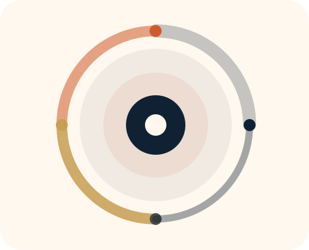

PE-Backed & Operator-Led Companies
For companies where growth has exposed weak handoffs, approval chains, and internal drag.
Explore this audienceWho We Help
FlexGCC is built for leadership teams that want a specific bottleneck fixed with commercial logic, practical design, and a working result in 45 days.

For companies where growth has exposed weak handoffs, approval chains, and internal drag.
Explore this audience
For teams where analysts are overloaded by fragile models, recurring reporting, and manual data movement.
Explore this audience
For teams that want productivity gains without weak control models, shadow automation, or vague accountability.
Explore this audienceShared engagement model
The language changes by audience. The operating logic does not. We start with the bottleneck that matters most, make the commercial case explicit, and ship something that works in the real environment around it.
Why this travels well
That is why a narrow pilot travels well across private equity, finance, and regulated operating environments. The tools differ. The operating discipline is consistent.
Find your fit